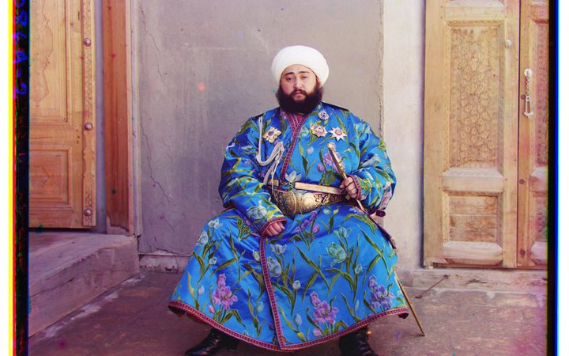
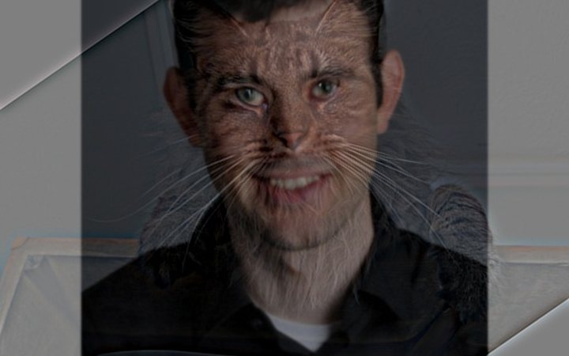
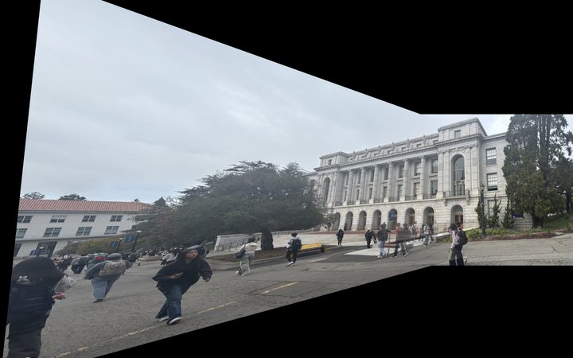
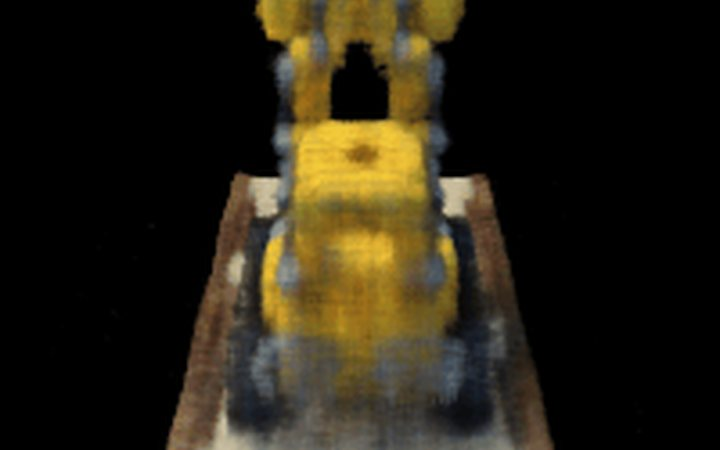
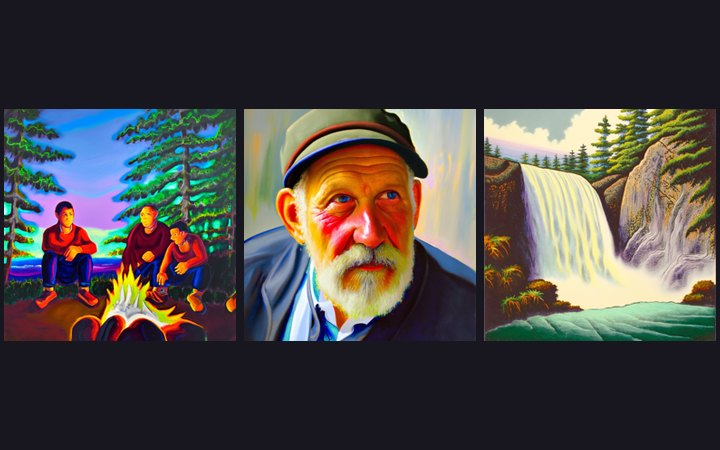

Project 1
Colorizing the Prokudin-Gorskii Collection
Splitting glass-plate scans into B, G and R channels and aligning them automatically with a coarse-to-fine image pyramid.
Read the write-up →
Project 2
Fun with Filters and Frequencies
Convolution from scratch, edge detection, unsharp masking, hybrid images and multi-resolution blending.
Read the write-up →
Project 3
Image Warping and Mosaicing
Homographies, warping and blending, then fully automatic panorama stitching with Harris corners, ANMS, feature matching and RANSAC.
Read the write-up →
Project 4
Neural Radiance Fields (NeRF)
Camera calibration and pose estimation, a 2D neural field, then a full 3D NeRF that renders novel views of Lego and of an object I scanned myself.
Read the write-up →
Project 5
Fun with Diffusion Models
Sampling loops, classifier-free guidance, inpainting and visual anagrams, then training my own denoising UNet and flow-matching models.
Read the write-up →